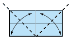
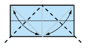
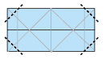
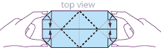
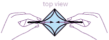
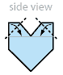
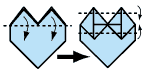
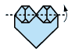

Papr

For grownups, some of our fondest memories revolve around making origami as kids. Some of that simpler time can be captured by a little paper folding. Folding origami is also a great way for parents to spend quality time with kids without the need for any high tech gadget.
Folding origami gives parents a chance to sit down with kids and interact while creating something, and all without the noise of video games or tv programming..
Papr
1. Start with your paper white side up.
Fold in half and unfold.
Then fold in half the opposite way and unfold.
2. Fold the top and the bottom edges into the centre line
3. Fold the two bottom corners up to the top centre point and unfold
4. Now fold the 2 top corners down to the bottom centre point and unfold.
5. Fold the outside edges in to the points shown and unfold.
6. Fold all four corners in to the creases just made.
Now we are going to form the heart. Hold the model by the corners, as shown, and bring these corners together.
8. Still holding the model together, bring the outside edges toward each other.
The model should now look something like this. Push the two triangles together underneath the model.
10. Lay flat on the table. Fold the two top corners down to the crease shown and unfold.
11. Use these creases to inside reverse fold these corners, so the model now looks like this.
12. Fold the uppermost flaps down. Then fold the tips inward
13. Fold the triangles back up